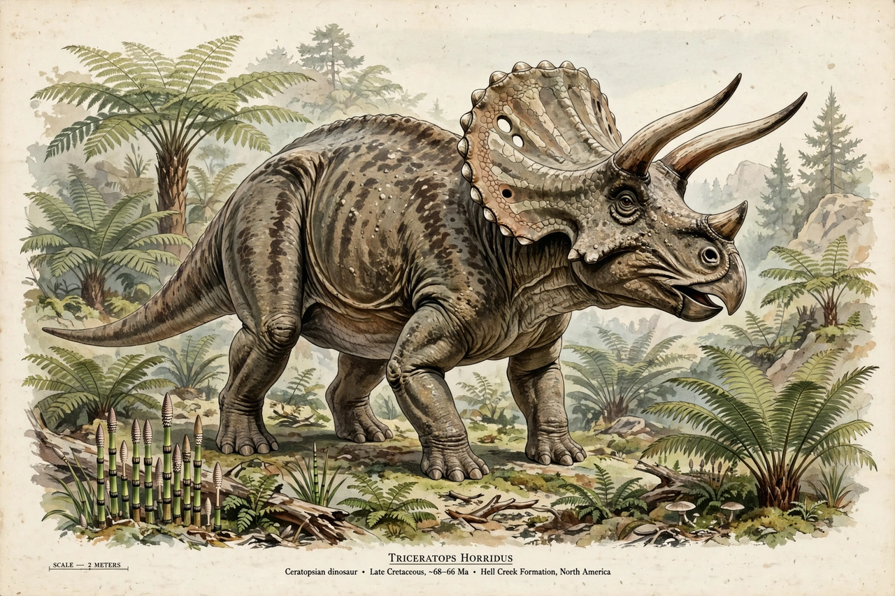

Triceratops
| Triceratops | |
|---|---|
| Lived | Late Cretaceous, about 68–66 million years ago |
| Location | North America (western interior) |
| Size | About 8–9 m long, 2–3 tonnes or more |
| Diet | Herbivore |
| Named | 1889, by Othniel Charles Marsh |
Triceratops (meaning "three-horned face") is a genus of chasmosaurine ceratopsian dinosaur that lived in what is now western North America during the late Maastrichtian age of the Late Cretaceous period, about 68 to 66 million years ago. It was one of the last non-avian dinosaur genera, and it was extinguished in the Cretaceous–Paleogene extinction event. Bearing a large bony frill, three horns on the skull and a large four-legged body, it is one of the most recognisable of all dinosaurs.

Description and behaviour
Triceratops reached about 8–9 metres in length, with a skull up to 2.5 m — among the largest of any land animal. The two brow horns could reach a metre long; the function of horns and frill is debated between defence against predators such as Tyrannosaurus (which shared its world — fossil Triceratops bones bear healed tyrannosaur bite marks), display and species recognition, and combat between rivals (frills show evidence of injuries consistent with horn-locking fights). Its beaked mouth and batteries of shearing teeth cropped low vegetation. A long-running debate asks whether the similar dinosaur Torosaurus is simply the mature growth stage of Triceratops; most researchers currently keep them separate.
Discovery
The first specimens — a pair of brow horns found near Denver in 1887 — were first mistaken for a giant extinct bison. Othniel Charles Marsh named Triceratops in 1889 during the "Bone Wars" with Edward Drinker Cope. Hundreds of specimens have since been collected from the Hell Creek and Lance formations of Montana, Wyoming and the Dakotas, making it one of the best-known dinosaurs and the state fossil of Wyoming.